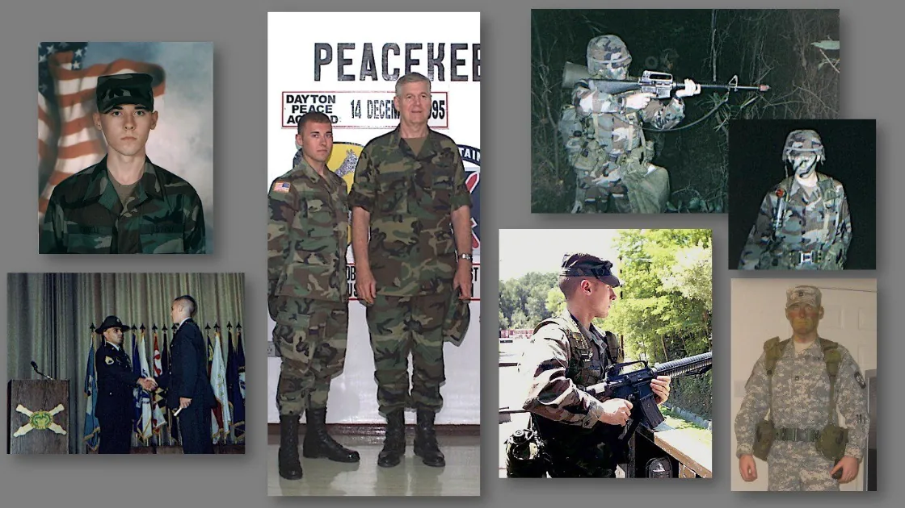
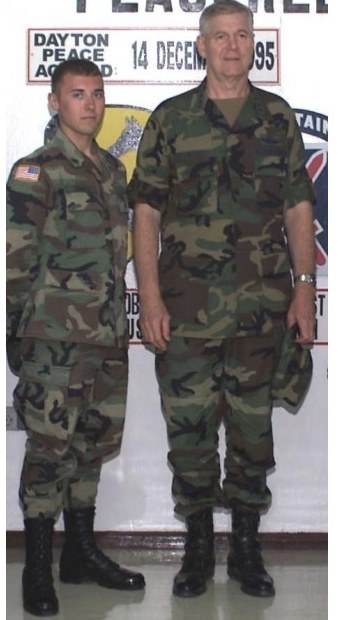
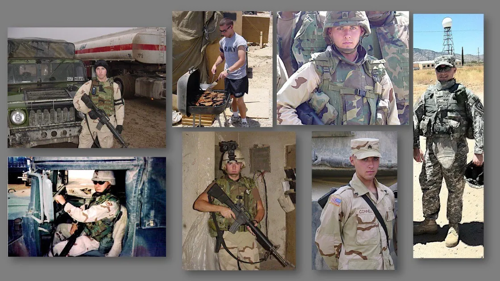
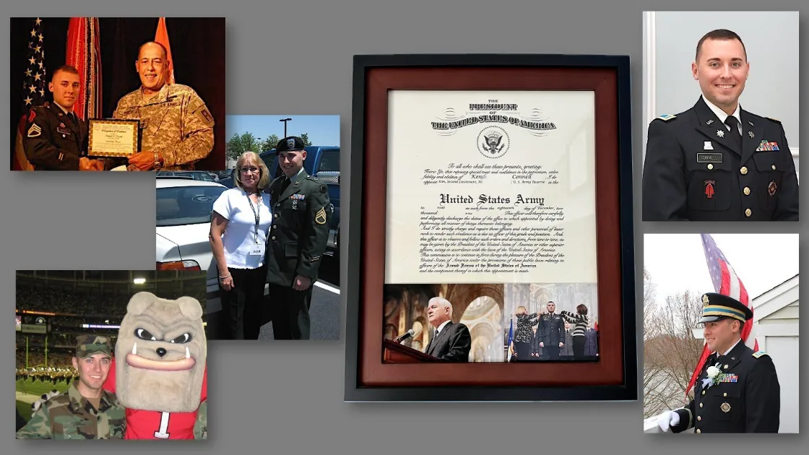

Everybody who raises their right hand has a reason. This is mine, written down on Veterans Day, twenty-six years after a recruiter handed a high school junior a free T-shirt.

The T-shirt
I was 17. Old enough to sign an enlistment contract. Too young to sign it alone. My mom had to put her name next to mine.
The recruiter gave me an Army T-shirt that day, and I wore it straight to the Walmart back home in small-town South Georgia. I walked those aisles like the four letters across my chest were a comic book logo. Like I’d already done something.
I hadn’t. No Basic yet. Nothing hard, hard. I didn’t even know the difference between enlisted and officers.
But in that shirt I felt like I could save my family. 🦸🏻♂️
That part matters more than the shirt.
Why
People join for all kinds of reasons. College money. Family legacy. A war movie they watched one too many times.
I had a little of the first one. I already had a full scholarship lined up, but the GI Bill was a backup plan, and I’ve always needed a what-if.
The real reason was older than that.
There was no man to look up to in our house. It was my mom, my sister and me, and the two of them were the whole team. Home wasn’t always a safe place. Some nights we left in a hurry, and some of those nights ended in a shelter.
A kid who sees bad people hurt good ones up close figures out early what he wants to be when he grows up. I wanted to be the one who stops it.
My mom was a nurse. She put everyone else first, every shift, every day, including the days she had nothing left to give. Years later a strengths assessment at work put Empathy at the very top of my list. I wasn’t surprised. I know exactly where I learned it.
The comics helped too. Mom always found a couple of extra dollars for the latest issues on grocery runs (that story is in 10-Cent Dreams). Those heroes didn’t have it easy either. They just decided to stand between the people they loved and whatever was coming for them.
Nobody told me which branch to pick or what job to take. Every decision was mine to own. Looking back, that was the first real lesson.
What the shirt didn’t say
Training ended on the morning of September 11, 2001. I’ve written about that morning before. What came after is the part the T-shirt never mentioned.
Before I turned 20, I was in Bosnia on peacekeeping orders, seeing what genocide leaves behind. We helped rebuild schools. We marked off ground where the mines were still waiting. I pulled 12-hour guard shifts in watchtowers on below-freezing nights.
One night the gunfire started and every muscle I had locked up. Then someone explained. A wedding. A family celebrating a new chapter in a place where the war had finally ended. I still think about that one.

The next year I turned 21 in Baghdad, on a 14-month deployment, while my high school friends were at football games and parties. We slept in an abandoned warehouse, and the mortars became background noise. I didn’t notice how normal that was starting to feel.
That Christmas was my first away from home. Mom mailed me a miniature Santa Claus so I’d have a little piece of home. That tiny Santa did more work than he had any right to.
Then there was the goat. Around 3 a.m., on gate guard at the perimeter, something nudged me in the dark. I nearly jumped out of my boots. A goat scared me worse than the mortars ever did.
That’s when it hit me. The mortars weren’t supposed to be normal. None of it was.

The pursuit
In a lot of ways my story reminds me of The Pursuit of Happyness.
From a shelter in South Georgia to Staff Sergeant. Then a commission at UGA, a first real job at Deloitte in London, and fifteen-plus years of security work since. I retired as a Major in 2024, after 24 years.
I’ve had a lot of luck. Tremendous good fortune, honestly. But nearly all of it traces back to one choice I made at 17 without really knowing what I was stepping into. I raised my hand, took the oath, and it carried me out of that small town and around the world.
I don’t take a day of it for granted.

The four letters, now
I still think about that kid in the Walmart. He was wrong about a lot. The shirt didn’t make him anything. The work did, and it took years, and the people I served beside paid far more for it than I ever did.
But he was right about the part that mattered. He wanted to stand between bad people and good ones.
That’s still the job. These days the bad actors work on networks and in machines, and the good people are everyone who never has to think about it.
To every veteran reading this: whatever your reason was, thank you for raising your hand.
And to the 17-year-old out there in a free T-shirt, feeling like a superhero before you’ve done anything hard: hold onto that feeling. Then go earn it.
Happy Veterans Day. 🇺🇸
Written from my own notes and memories, with an AI thinking partner helping me shape them. Human in the lead.
Next dispatch: Building a Seat at the Table
Want to talk? Find me on LinkedIn (opens in a new tab).